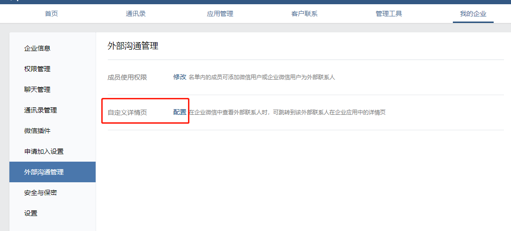
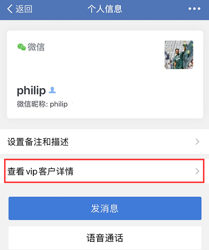
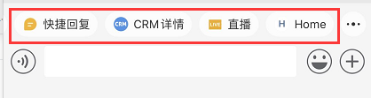
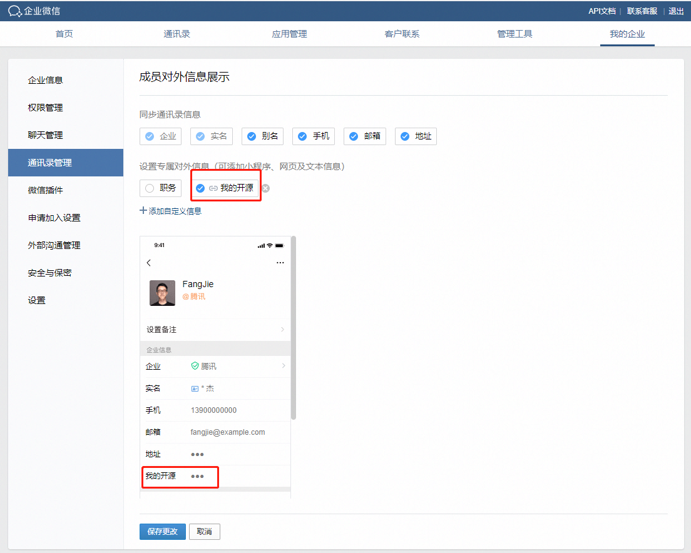

ww.getContext
最后更新：2025/04/09
目录
ww.getContext([params])
兼容性：企业微信 3.0.24 开始支持
功能描述
获取当前页面打开场景。
ww.getContext()点击复制
参数说明
params: Object
| 属性 | 类型 | 必填 | 说明 | |
|---|---|---|---|---|
| success | Function | 否 | 成功回调 | |
| fail | Function | 否 | 失败回调 | |
| cancel | Function | 否 | 取消回调 | |
| complete | Function | 否 | 完成回调 |
返回说明
Promise<Object>
| 属性 | 类型 | 必填 | 说明 | |||||||||||||||||||||||||||||||||||||||||
|---|---|---|---|---|---|---|---|---|---|---|---|---|---|---|---|---|---|---|---|---|---|---|---|---|---|---|---|---|---|---|---|---|---|---|---|---|---|---|---|---|---|---|---|---|
| errMsg | string | 是 | 通用错误信息 | |||||||||||||||||||||||||||||||||||||||||
| errCode | number | 是 | 通用错误码 | |||||||||||||||||||||||||||||||||||||||||
| entry | string | 是 | 进入页面的场景类型 | |||||||||||||||||||||||||||||||||||||||||
| ||||||||||||||||||||||||||||||||||||||||||||
| shareTicket | string | 否 | 从设置了 | |||||||||||||||||||||||||||||||||||||||||
使用说明
调用该接口可以判断用户是从哪个入口打开页面，从而决定是否可以调用客户联系相关的接口。
Entry入口说明
联系人详情的入口
注意配置入口是在企业管理端--外部沟通管理--自定义详情页)
配置之后，用户在终端查看外部联系人详情时，入口如下图：

工具栏的入口（单聊或群聊）

聊天附件栏的入口

内部群群看板的入口
配置入口在内部群的聊天信息-群看板（目前仅桌面端支持配置）：
配置之后，桌面端查看入口：
移动端查看入口：
特别注意
成员自定义对外信息的入口进入的，调用getContext返回的是normal（为什么呢？因为这里不涉及客户管理功能，并不能调用客户联系的相关接口），设置入口如下图：

旧版jweixin调用
示例代码
wx.invoke('getContext', { }, function(res){ if(res.err_msg == "getContext:ok"){ entry = res.entry ; //返回进入H5页面的入口类型，目前有normal、contact_profile、single_chat_tools、group_chat_tools、chat_attachment shareTicket = res.shareTicket; //可用于调用getShareInfo接口 }else { //错误处理 } });点击复制